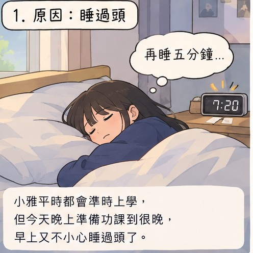
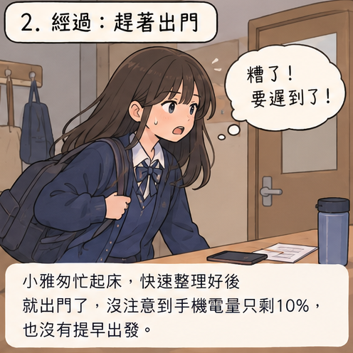
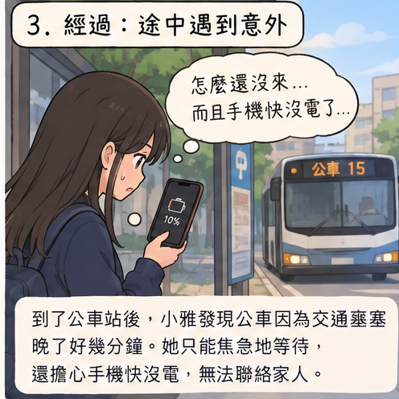
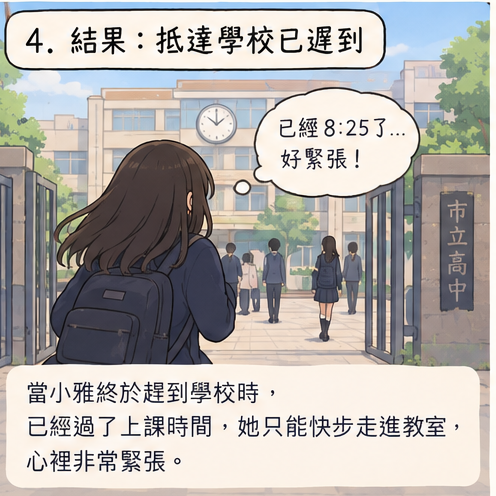
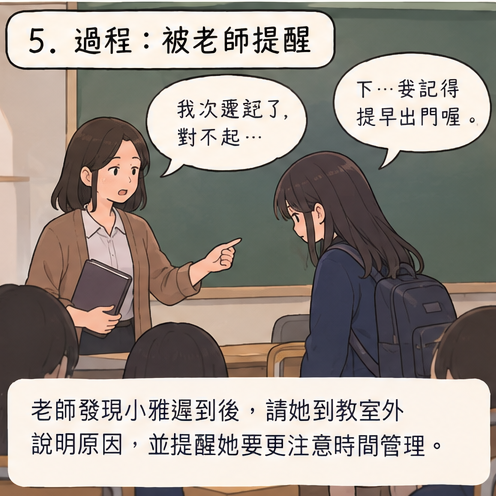
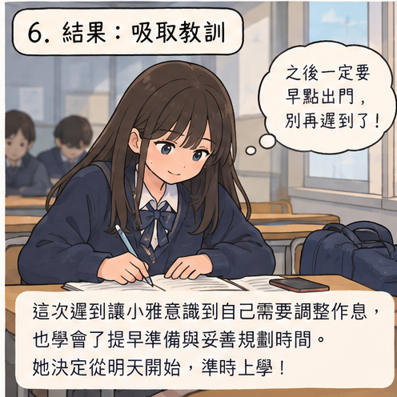

01 · 原因
睡過頭
前一天晚上準備功課到很晚，小雅早上不小心睡過頭了。
平時準時上學的小雅，因為前一晚準備功課到很晚，早上不小心睡過頭。 她匆忙出門後又在途中遇到交通延誤，最後遲到學校，也因此得到老師的提醒。

前一天晚上準備功課到很晚，小雅早上不小心睡過頭了。

她匆忙整理好東西便出門，卻沒有注意手機只剩 10% 電量。

公車因交通塞車延誤，小雅只能焦急等待，也擔心手機很快沒電。

抵達學校時已經過了上課時間，小雅只能快步走進教室。

老師了解原因後，提醒她要更注意時間管理，也要提早出門。

小雅決定從明天開始提早準備，準時上學，不再讓自己遲到。
LESSON
提早準備、預留交通時間，以及做好時間管理，都能讓每天更加從容。